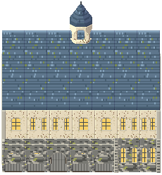
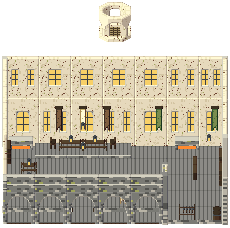

Kaelmor
The fixed capital of the Syndicate, the trading city between all the continents, and the city where the last demigod-king died.
Kaelmor is an old walled city of grey stone on an island in the middle of the Mere, ringed by a twelve-sided wall with seventeen round towers. It was a fishing village when Varnhalt came. His vassals and human masons built it into a city around his hall, and the Syndicate made it a market. Today it is the trading city between all the continents: close to everything, neutral with everyone, and the one port where Ironreach, Wildwood and Covenant merchants stand in the same hall. Canals cross the city, and its drawbridges are raised and lowered by winch for the tide and the shipping.
Description
Kaelmor is a fortress. Cannons stand on its towers, and its gates and canal doors can be shut against anything. When the king died the city grew afraid, but it knows it is well defended, and nothing evil gets into Kaelmor itself. The fighting begins outside its walls.
The fixed capital and the trading city between all continents; the Thousand Keels, the floating city, are where the Syndicate truly lives. Ruled by a council of five houses with no head (see Brackwater Verge).
Rule
Kaelmor is ruled by a council of five houses: House Tollivere, House Vantrecke, House Aurisande, House Merrowdyne, House Lanthorne.
The sealed hall and the king's last message
The night Varnhalt died, the Order of the Fallen sealed his hall. What they are hiding is his last message: a summons to gather the best warriors in the world and stop Ezrakhar before he grows too strong. The Order keeps it quiet for two reasons. They fear panic if the city learns that Ezrakhar is rising, and they believe only the worthy should hear it. The player must prove worthy first. Being given the message is the reward at the end of the Verge main line, and stopping Ezrakhar is what the player strives for from then on.
The Order in Kaelmor is led by Mother Ancelin Graye, an old woman, mild and steel-hard at once. She decides who is worthy of the message.
Arrival. The player's first guide is still Lark, the Half-Blood girl from the quays, who meets every marked one on the square and takes them to Odda Brine Tollivere. Father Voss and Mother Graye come later.
The Ilvaren Communion in Kaelmor
The Communion's cathedral stands in Hallowrise, under a great and mighty tower, Ystrahal, the tallest building in Kaelmor after the spire*.* Its priest is Father Eskarel Voss, an Ilvaren father, who has two tasks: to seek out the worthy among the marked ones who come ashore and test them, and to keep the flame at the top of the tower burning, the last light in Verge now that the watchfires are dark. The Communion and the Order compete for the player: each wants the marked ones as its own warriors.
Corvin Lanthorne was Voss's novice. His faith broke when Varnhalt died and the father did not come, and he went over to the Black Synod believing the gods will never return. Voss's secret: he knows Corvin is in the Synod and has hidden it from Aldous.
At the harbour mouth stand the twin statues. Seraveth faces the sea with her trident lowered; Varnhalt faces the land with his blade raised. Both are carved as they were in the Burning Years, young and terrible. On the night he died, the stone blade cracked and fell into the lagoon. The people have left the broken stump as it is.
In the middle of the city stands the spire, forty paces tall, with three lamps at its top that answer the three watchfires on the heights. The old families of Kaelmor have lit those lamps every night for centuries, out of tradition and love rather than understanding.
Districts
| District | Where | What it is |
|---|---|---|
| Spirecourt | The walled plateau in the centre | The old town. Varnhalt's hall stands here, its door now sealed by his keepers, along with the spire, the inn and Ambry's curiosity shop. |
| Tidewharf | West, the harbour | Quays, cranes, warehouses and the tall ships. Odda Brine's harbour office, the tavern, and the hidden winch loft where Pell Gannet keeps court. |
| Saltmarket | East | The market square with its fountain, stalls and windmill terrace, and the great trade hall where every faction's merchants meet. |
| Pillaryards | South, inside the south gate | Smithies, tanneries, coopers and the alchemist's shop. Grenna Fusewick's workshop. A great hall door, sealed with Varnhalt's rune, that no one living has opened. |
| Hallowrise | North | The great hall, the class halls, the guild hall of trade trainers, and the chart office of the Cartographers' Accord. |
| Ebbside | South-east | Terraced houses, gardens, wells and cobbled lanes. Home for most of the city, and Sabeth Quill's herb shop. |
| District | Race | What it is |
|---|---|---|
| Tidewharf | Corsairs | The harbour, ship-clans' halls, House Vantrecke |
| Ebbside | Tide-Born | Canal-houses on stilts, the Cantons' seat |
| Saltmarket | Half-Bloods | The great market, guild-halls, House Aurisande |
| Spirecourt | all | The old town, the spire, House Lanthorne |
| Hallowrise | all | Civic quarter, Ystrahal of the Ilvaren Communion |
| Pillaryards | all | Craft quarter; the sealed vault beneath |
What lies beneath
Under Pillaryards, behind the sealed door, is the vault: a gate to the Deep that Varnhalt guarded with his own hands for three hundred years. That is why he chose to die in Kaelmor rather than anywhere else. The townsfolk have long told stories of a bell that rings under the city, which no one has ever found. It is his runes, straining. Since the night he died, the bell has rung every night, and in Ebbside the wells have started to ring with it.
Gallery



